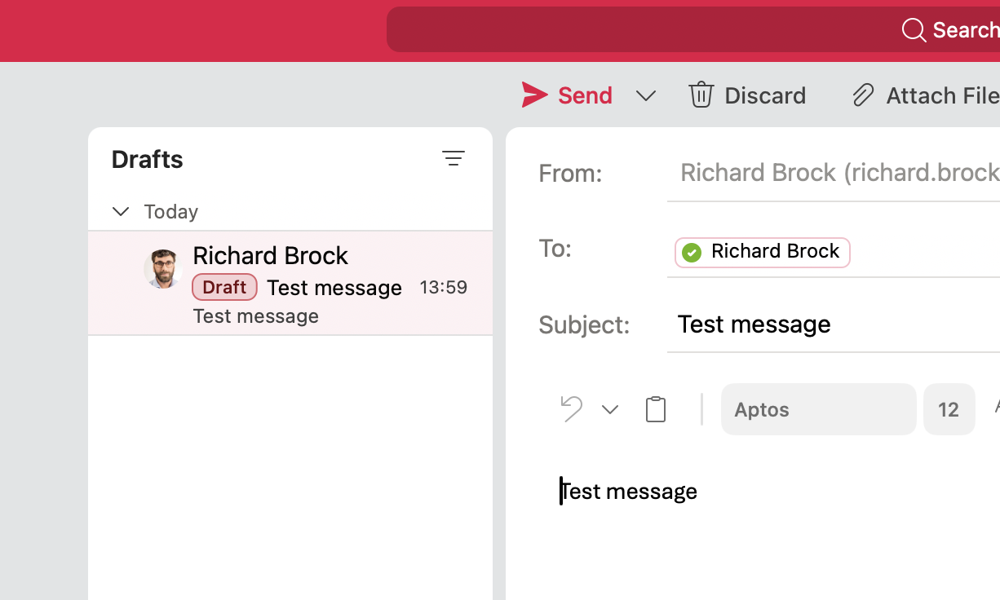

mail_data <- read_xlsx(glue(<your folder>))Emailing in R
1 Using R to email
The package Microsoft365R is a useful tool for interacting with your Office account via R. This means you can create mass emails from a spreadsheet, and customise the body text of the messages.
2 Loading a spreadsheet of data
To test the approach, we will load a spreadsheet of data which has names and email addresses in. This is stored on OneDrive here: mail_data. The spreadsheet includes names, email addresses and some other data.
Download the spreadsheet.
First let us load the data using readxlsx
The first time you use it, you need to run install.packages("Microsoft365R") then we can invoke the library.
library(Microsoft365R)Next, authenticate to get access to your email. Running that command will force a webpage to open in which you need to use the normal KCL Microsoft login to access your mail. When that has completed, you will see the message:
Authenticated with Azure Active Directory. Please close this page and return to R.
You can close the webpage and continue to the next step.
my_outlook <- get_business_outlook()Loading Microsoft Graph login for default tenantTo create an email, you can use the function my_outlook. The simplest way to create a message is to manually pass the information. The first parameter is the text of the message, then you can give the message title using subject = "Test message" and the recipient in to = richard.brock@kcl.ac.uk.
my_email <- my_outlook$create_email("Test message",
subject = "Test message",
to = "richard.brock@kcl.ac.uk")That will create a message in the draft folder of Outlook, which looks like this:

You can send the message manually from your draft folder - it is probably a good idea to create draft emails and check them. R can also automate sending the messages, using the commandmy_email$send():
my_email$send()3 Emailing names in a spreadsheet
The power of the package comes from the ability to send multiple emails. We can now use the spreadsheet of email addresses to send multiple messages. To do that we are going to learn about loops. A loop is a programming structure that repeats a function a specific number of times. For example the simple loop below. The loop starts with for and then we define a variable (i) which we will use to iterate the loop (the variable i is going to increase by one each time the loop goes round). Next we define how many times to loop (i in 1:10) - we will start from 1 and go round the loop 10 times. Inside the brackets {} we put the code we want to repeat. Here we will print “hello” and the varibale i. The paste function joins the word and the number.
for (i in 1:10){
print(paste("hello", i))
}[1] "hello 1"
[1] "hello 2"
[1] "hello 3"
[1] "hello 4"
[1] "hello 5"
[1] "hello 6"
[1] "hello 7"
[1] "hello 8"
[1] "hello 9"
[1] "hello 10"We can apply a loop to sending emails. We can loop over our spreadsheet, and use the data in each row to generate one new draft email.
First, we don’t want to run from 1 to 10 this time, but we run from 1 to the number or entries in our spreadsheet. We get the number of rows using nrow(mail_data) - that means we don’t have to update the code if we add a new row. We also want to change the address for each row. Here we can point to the column of addresses using mail_data$Email. Then we want to first select, the address in the first row, then the address in the second row, etc. To do that we set the address to mail_data$Email[i] - where [i] refers to row number i. You can test this by typing:
# this gives the address in the first row
mail_data$Email[1][1] "richard.brock@kcl.ac.uk"# this gives the address in the second row
mail_data$Email[2][1] "peter.kemp@kcl.ac.uk"We can use a loop to access all the addresses, looping over all the rows in the data frame.
for (i in 1:nrow(mail_data)) {
print(mail_data$Email[i])
}[1] "richard.brock@kcl.ac.uk"
[1] "peter.kemp@kcl.ac.uk"We can now create a loop that goes through all the rows in the data frame and creates a draft email, containing the text “Hello” with the subject “Test” to the emails addressed listed.
for (i in 1:nrow(mail_data)) {
my_email <- my_outlook$create_email("Hello",
subject = "Test", to = mail_data$Email[i])
}4 Creating custom text
You may well also want the body text of the message to vary, for example, you may want to have the greeting change for each individual in the data frame. Note that the names of individuals are stored in the dataframe in the vector First_name.
To create a single block of text, we will use the paste0 function - this joins together (pastes) several vectors to make a block of text - note by default a space is added between the joined vectors. For example:
print(paste("Dear", "Richard"))[1] "Dear Richard"part1 <- "Hi"
part2 <- "Richard"
print(paste(part1, part2))[1] "Hi Richard"We can use paste and data from the spreadsheet to make a custom message in the loop. To add returns we use the character "\r" - think of this as pressing return twice.
for (i in 1:nrow(mail_data)) {
my_email <- my_outlook$create_email(paste("Dear", mail_data$First_name[i],",",
"\r", "\r",
"Body text I want in my email.",
"\r", "\r",
"Best wishes,",
"\r", "\r",
"Richard"),
subject = "Email subject", to = mail_data$Email[i])
}